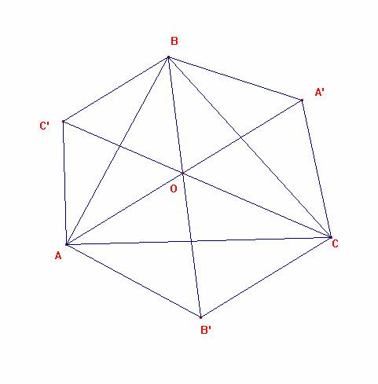

De investigación
Propuesto por Juan Bosco Romero Márquez, profesor
colaborador de la Universidad de Valladolid
Problema 318
18. Si en el triángulo ABC el ángulo A=60º , y llamamos O al punto de concurso
de las rectas que unen los vértices A,B,C a los
centros A´, B´, C´, de los triángulos equiláteros construidos
exteriormente a los lados BC, CA, AB; demostrar que
BO/ BB´ + CO/CC´= 1, BO/BB´: CO/CC´= AB/ AC, (BO/BB´)(CO/CC´)
= (1/2) ( AO/AA´)
Alba, L.
de (1902) "Revista Trimestral de matemáticas", Año, II,
N.5,
Solución del director.
Apartado 1

BO/ BB´ +
CO/CC´= 1
Debemos demostrar que BO/ BB´ = 1 - CO/CC´= C’O/CC’
Los segmentos BC’ y CB’ son paralelos pues
1.- <ACB’ =30º
2.- <CAC’=60º+30º=90º
3.- <AC’B=120º
4.- por 2.- y 3.- el ángulo que formarían la recta AC con C’B es de 30º.
Por ser paralelos B C’ y C B’, los triángulos BC’O y CB’O son semejantes.
Por ello, es BO/C’O=OB’/OC=BB’/CC’, luego BO/ BB´ = C’O/CC’ cqd
Apartado 2
Hemos de demostrar que BO/BB´: CO/CC´= AB/ AC.
Por el apartado 1, es:
BO/BB´:
CO/CC´= C’O/CC’: CO/CC´ = C’O/CO.
Por ser, como vimos antes, C’BO semejante a CB’O, es C’O/CO = C’B/B’C.
Los triángulos AC’B y AB’C son isósceles 30º 120º 30º, y por ello semejantes, luego es
C’B/B’C = AB/AC.
Por todo ello, es
BO/BB´:
CO/CC´= C’O/CC’: CO/CC´ = C’O/CO = C’B/B’C = AB/AC, cqd
Ricardo Barroso Campos
Didáctica de las Matemáticas
Universidad de Sevilla